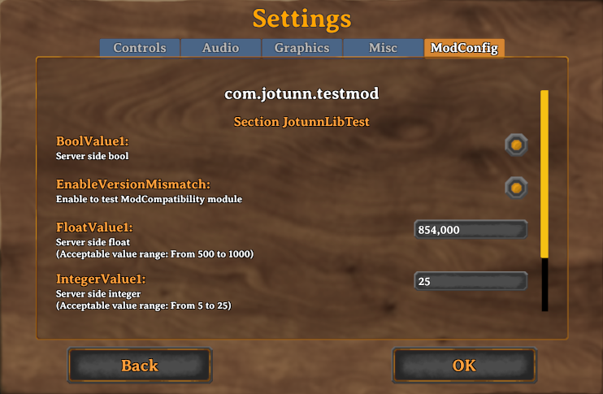

Persistent & Synced Configurations
Jötunn itself does not provide any implementations or abstractions for persisent configurations. We do however respect BepInEx.ConfigEntry's, their various properties, as well as their ConfigurationManager properties. Furthermore we have implemented a method of enforcing server side sync on specific configs via the ConfigurationManagerAttributes IsAdminOnly flag.
Hint: IsAdminOnly is provided via JVL, not BepInEx.

Synced Configurations
We can sync a client configuration with the server by ensuring that the plugin has a NetworkCompatibilityAttribute enabled, and then setting the IsAdminOnly flag on the configuration like so:
// Create some sample configuration values to check server sync
private void CreateConfigValues()
{
Config.SaveOnConfigSet = true;
// Add server config which gets pushed to all clients connecting and can only be edited by admins
// In local/single player games the player is always considered the admin
Config.Bind("JotunnLibTest", "StringValue1", "StringValue", new ConfigDescription("Server side string", null, new ConfigurationManagerAttributes {IsAdminOnly = true}));
Config.Bind("JotunnLibTest", "FloatValue1", 750f, new ConfigDescription("Server side float", new AcceptableValueRange<float>(500, 1000), new ConfigurationManagerAttributes {IsAdminOnly = true}));
Config.Bind("JotunnLibTest", "IntegerValue1", 200, new ConfigDescription("Server side integer", new AcceptableValueRange<int>(5, 25), new ConfigurationManagerAttributes {IsAdminOnly = true}));
Config.Bind("JotunnLibTest", "BoolValue1", false, new ConfigDescription("Server side bool", null, new ConfigurationManagerAttributes {IsAdminOnly = true}));
Config.Bind("JotunnLibTest", "KeycodeValue", KeyCode.F10, new ConfigDescription("Server side Keycode", null, new ConfigurationManagerAttributes {IsAdminOnly = true}));
// Add a client side custom input key for the EvilSword
Config.Bind("JotunnLibTest", "EvilSwordSpecialAttack", KeyCode.B, new ConfigDescription("Key to unleash evil with the Evil Sword"));
}
Here we have implemented some BepInEx configuration attributes to act as a showcase for what BepInEx has to offer, as well as our own implementation of synced attributes. This allows admins defined in the servers adminlist.txt to change the values on the fly, however clients without admin have no control over this config.